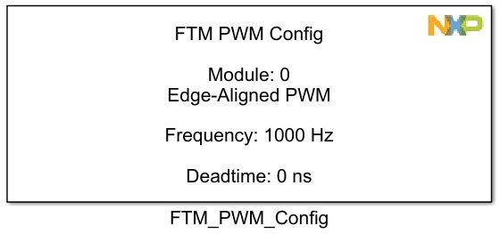
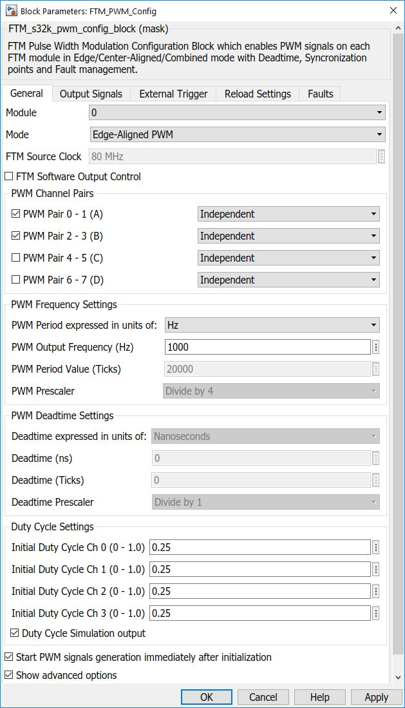
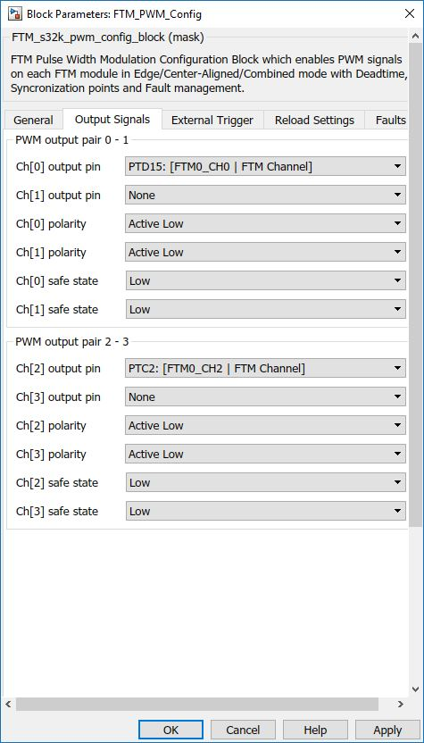
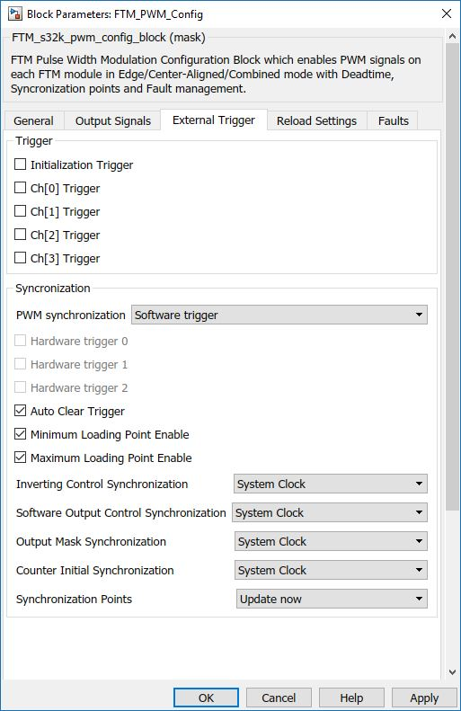
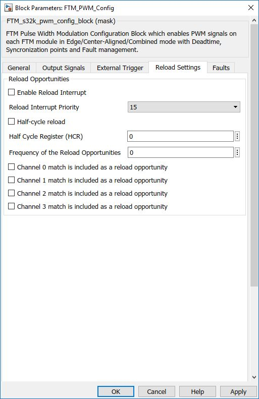
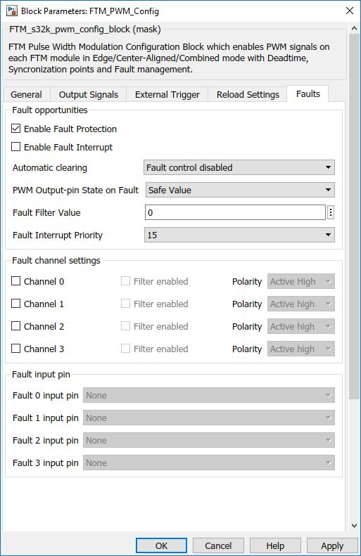

PWM Config Block
The main functionality of the block is to generate PWM output signals using the FTM module. The Block can generate signals in Edge-Aligned, Center Aligned and Combine mode.
Block Image
Inputs:
-
The inputs will be available according to the selected channel pairs, for each pairs, as follows:
- Ch(n), Ch(n+1) - for Edge-Aligned [Independent], Center-Aligned [Independent], Combine mode
- Ch(n) - for Edge-Aligned [Complementary], Center-Aligned [Complementary]
- SW control - Value(s) forced on the respective channel(s) by SW control (uint16):
- Values - upper half (bits 8-15) - bit n 1/0 -> channel n forced to 1/0
- Enable - lower half (bits 0-7) - bit n 1 -> channel n affected by software control
- OUTMASK - forces the output channel n to inactive state (denoted by 'Safe state' option used in this block, in the Output signals tab:
e.g: 257 - 0x0101: values 1, enable 1 -> software control activated for channel 0 and output signal forced to HIGH.
Note:This input is only available if SW control is enabled (from the SW control tab).
Note:To mask output channel n, use value 1 on the nth bit. This input is only available if SW control is enabled (from the SW control tab).
Outputs:
-
The outputs will be available according to the selected channel pairs, for each pairs, as follows:
- Ch(n), Ch(n+1) - for Edge-Aligned [Independent], Center-Aligned [Independent], Combine mode - if "Duty Cycle Simulation Output" is On
- Ch(n) - for Edge-Aligned [Complementary], Center-Aligned [Complementary] - if "Duty Cycle Simulation Output" is On
Parameters and Dialog Box
The block dialog consists of the following tabs:
- General
- Output Signals
- Reload Settings - Only in Advanced mode
- External Trigger - Only in Advanced mode
- Faults - Only in Advanced mode
General
FTM Module
Select which FTM module to use.
- Range: 0 – FTMn
Mode
Configures the mode in which the PWM signals will be generated.
- Edge-Aligned PWM
- Center-Aligned PWM
- Combine mode PWM
FTM Software Output Control
This checkbox enables or disables the software control.
Note:Only with this option enabled, the 2 additional inputs are available (SW control and OUTMASK).
Channel Pair
Enables or Disabled the output channel pair
If the mode is Edge-Aligned or Center-Aligned the channels can be configured as follows:
- Independent
- Complementary - the channel (n+1) output is the the duplicated or inverted as for the channel (n) output.
PWM Frequency
The PWM Frequency value can be expressed in Hz or Ticks. If the user choses to express in Ticks, it must set the PWM Prescaler too. If the user choses to express in Hz the prescaler and Ticks value will be computed automatically.
Deadtime
Deadtime is available only if one output is Complemetary or the PWM uses the combine mode.
The deadtime value can be expressed in Nanoseconds or Ticks. If the user choses to express in Ticks, it must set the Prescaler (1/4/16) too. If the user choses to express in Nanoseconds the prescaler and Ticks value will be computed automatically.
Duty Cycle Settings
Initial Duty Cycle - sets the Duty Cycle for the channels imediately after config. The functionality is described below:
- Edge-Aligned mode / Center-Aligned mode
- Independent - Ch(n) - sets the duty cycle for the channel (n).
- Complementary - Ch(2n) - sets the duty cycle for the channel (n) and (n+1) (the outputs are inverted).
- Combine mode
- Ch(2n) - sets the value of the pins set point.
- Ch(2n+1) - sets the value of the pins clear point.
The same principle is applied for the inputs and outputs.<\p>
Duty Cycle Simulation Output
Only available if DutyCycle simulation output is used
Start pin generation immediately after initialization
If this checkbox is set, the PWM generation output starts immediately after the peripheral is configured.
Show advanced options
Shows or hides the Advanced options tab.
Output Signals
Output Signals tab configures the PWM output pins and state:
Ch[n] output pin
Selects the output pin for the channel (n).
Ch[n] polarity
Defines the polarity of the channel output.
- Active High - The channel polarity is active high.
- Active Low - The channel polarity is active low.
- Main duplicated - The channel polarity for the Channel [n+1] is the same as for Channel[n].
- Main inverted - The channel polarity for the Channel [n+1] is inverted as for Channel[n].
If the pair is set in Complementary mode, for the channel [n+1] the options are:
Ch[n] safe state
Selects the output pin level when a fault appears.
- Low - output Low when fault.
- High - output High state when fault.
External Trigger
The External Triggers tab is available only if Show advanced checkbox is checked and contains the following parameters:
Initialization Channel (n) Trigger
Enables generation of Output Trigger signal based on the counter value matching of register value or initialization of FTM counter.
PWM Syncronization
Selects the software trigger as the PWM synchronization trigger or HW trigger.
Hardware trigger n
Enables hardware trigger (n) to the PWM synchronization. Hardware trigger (n) happens when a rising edge is detected at the trigger 1 input signal.
Auto Clear Trigger
Determines if the FTM counter is reinitialized when the selected trigger for the synchronization is detected.
Minimum Loading Point Enable
Selects the maximum loading point to PWM synchronization (Synchronization Points). If is set, the selected loading point is when the FTM counter reaches its maximum value (MOD register).
Maximum Loading Point Enable
Selects the minimum loading point to PWM synchronization (Synchronization Points). If CNTMIN is set, the selected loading point is when the FTM counter reaches its minimum value (CNTIN register).
Inverting Control Syncronization
This Checkbox enables or disables the Reload Interrupt.
Synchronization Points
Selects the synchronization method.
- Wait loading points
- Update now
Reload Settings
The Reload settings tab contains the following parameters:
Enables Reload Interrupt
This Checkbox enables or disables the Reload Interrupt.
Reload Interrupt Priority
This dropdown sets the priority of the Reload Interrupt priroty.
Half-Cycle reload
The Half Cycle Register contains the match value for FTM half cycle reload feature.
Frequency of the Reload Opportunities
Channel n match is included as a reload opportunity
The reload opportunity is enabled and it happens at the channel (n) match.
Faults Trigger
The Faults Triggers tab is available only if Show advanced checkbox is checked and contains the following parameters:
Enables Fault Protection
This Checkbox enables or disables the Fault Protection.
Enables Fault Interrupt
This Checkbox enables or disables the Fault Protection Interrupt.
Automatic Clearing
Description
- Fault control disabled
- Manual Fault control for even channels
- Manual Fault control for all channels
- Automatic Fault control for all channels
PWM Output-pins State on Fault
This dropdown sets the PWM pin states on fault.
- Safe Value
- Tri-state Value
Fault Filter Value
This editbox sets the filter value for the inputs of channels.
Fault Interrupt Priority
This dropdown sets the priority of the Fault Interrupt priroty.
Channel n
This Checkbox enables or disables the Fault Protection Interrupt on the Channel n.
Filter
This Checkbox enables or disables the filter fr this channel.
Polarity
This dropdown sets in which state the filter is active.
- Active Low
- Active High
Fault n input pin
This dropdown selects the pin assigned to the Fault interrupt.
Block Dependency
- None
Block Miscellaneous Details
Duty Cycle output signal needed for simulation purpose only.